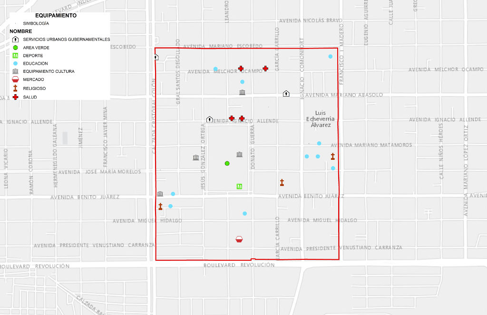

Uno de los espacios públicos de mayor identidad para los habitantes de Torreón es La Alameda, que junto con la Plaza de Armas, la Plaza Mayor, el Bosque Venustiano Carranza y el Estadio Revolución; pertenece a la red de parques del centro de nuestra ciudad. Son espacios con un uso intensivo que reclaman un orden y un mejor aprovechamiento.
El Instituto Municipal de Planeación y Competitividad de Torreón (IMPLAN), realizó la consulta ciudadana "Vive tu Alameda" el 23 de junio en la Universidad Iberoamericana de Torreón, con la participación de alrededor de cien personas que se expresaron en torno a cinco temas: Historia y Patrimonio, Medio Ambiente, Servicios Públicos, Entorno Social, Movilidad y Vialidad. Como resultado surgieron: 16 temas críticos, 31 estrategias y 75 acciones a realizar.
Pero ¿qué es lo que piden los ciudadanos acerca de este parque? El IMPLAN reunió las opiniones de ciudadanos que hacen uso de La Alameda en un programa de radio realizado en el lugar, donde los paseantes expresaron sus puntos de vista en un pizarrón a la vista de todos.
Algunas de las opiniones sobresalientes destacan que se requiere: "alumbrado, mantenimiento en los juegos, pasto en buen estado, bancas limpias, mantenimiento en la pintura, mantenimiento en los monumentos".
"En las canchas deberían poner techumbre para que tenga más funcionalidad ese espacio y sea aprovechado para que los cantores del domingo se instalen ahí o la banda municipal, o cualquier otro espectáculo artístico, toque de vez en cuando así como lo hacen en la Línea Verde", expresó Abril Kasna.
María Elena Pinales González destacó: "es urgente una reforestación de La Alameda así como del Bosque Venustiano Carranza, se están quedando poco a poco en puro asfalto, la reforestación es urgentísima pues son dos importantes pulmones de nuestra ciudad".
Fernando Cepeda dijo: "De entrada que los comerciantes se reubiquen en los camellones y no en el área de las banquetas del paseo. Un sistema de riego para el pasto, álamos nuevos, que la Fuente de Coahuila sea recubierta de otro material que no sea pintura, que las instalaciones eléctricas y de servicios sean subterráneas. Que se ilumine la fachada de la biblioteca".
Por su parte, Alberto Martínez dijo que lo que se necesita en serio es seguridad y Daniel Domínguez pidió que "metan orden a los lavacoches, se apropian de los estacionamientos aledaños desperdician el agua potable, dañan el pavimento y dejan basura en esas áreas, no respetan al paseante".
Algunas de las peticiones en el pizarrón, fueron: "Hacer más conciencia con los mismos comerciantes de alrededor, de poner la basura en el contenedor", "contar con mayor vigilancia", "Cambiar el piso y tener un alumbrado más moderno y eficaz", "mejores bebederos y aprovechar las canchas promoviendo más deporte", "poner música clásica ambiental", "realizar más eventos culturales y musicales", "poner aspersores para el regado de árboles", "Que no haya tanta propaganda religiosa", "una reforestación profunda", "Equipamiento y pintura total", "regular anuncios y publicidad de negocios", "tener piso parejo y control canino", "limpieza y orden institucional".
También solicitaron "contar con baños dignos y limpios", "que sea un lugar de paseo familiar", "activar las fuentes y tenerlas limpias", "darle el mantenimiento necesario para tener un paseo más bonito , "modernización de la biblioteca", "áreas deportivas que incentiven el uso de los espacios", "que planten árboles y que no quiten los que hay".
Por su parte, los líderes de diversos sectores que participaron en la consulta en la Ibero, plantearon en el tema de la contaminación: regular el uso de instrumentos de sonido con decibeles autorizados, la separación de residuos y reciclaje inclusivo, eliminar nieve seca en los locales comerciales, uso de contenedores eficientes, entre otros aspectos.
Mientras que en el tema de la identidad se abordó la necesidad de restauración de todos los elementos históricos y de los elementos intangibles del lugar, así como contar con un nuevo paisajismo y mayor promoción de eventos culturales.
Equipamiento

Patrimonio

Características
- La Alameda, actualmente tiene una multifuncionalidad dentro de su espacio ya que además de las áreas arboladas y andadores peatonales, alberga canchas deportivas, juegos mecánicos, una biblioteca pública, una terraza, fuente de sodas, neverías y puestos de venta semifijos.
- Cuenta con una superficie funcional de 3.83 Hectáreas más 2.5 Ha de camellones y vialidad vehicular perimetral.
- En las 14 manzanas que la rodean el uso de suelo es mixto, esto quiere decir que conviven comercios, oficinas, equipamientos educativos, equipamientos de salud, servicios y vivienda.
Patrimonio histórico del polígono
- 18 monumentos históricos
- 36 monumentos artísticos
- 21 monumentos históricos-artísticos
Vivienda
- Dentro de la zona de influencia Alameda se encuentran 919 viviendas, las cuales 718 se consideran "Habitadas" (78.1%) y 21.9% se distribuye entre "Ocupación temporal y Deshabitada".